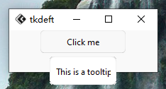

版本0.1.3更新！
本次主要为优化、修复为主
新增
- 文档新添api文档
- 文档新添
作者主页、tkadwite导航
优化
优化判断部分组件主题、样式的方法
修复
- 设置依赖numpy版本时出现问题，因只需用基本的array方法，所以能兼容大部分版本，而numpy2.x多版本只支持python3.11及以上，导致前面的版本不能安装
- 更改tkdeft依赖，只能为0.0.9。
本次主要为优化、修复为主
作者主页、tkadwite导航优化判断部分组件主题、样式的方法

from tkflu import *
root = FluWindow()
theme_manager = FluThemeManager(root)
btn = FluButton(root, text="Button", mode="light", style="standard", command=lambda: theme_manager.toggle())
btn.pack(padx=20, pady=20, fill="both", expand="yes")
root.mainloop()

from tkflu import *
root = FluWindow()
theme_manager = FluThemeManager(root)
frame = FluFrame(root, mode="light", style="standard")
btn = FluButton(frame, text="Button", mode="light", style="standard", command=lambda: theme_manager.toggle())
btn.pack(padx=20, pady=20, fill="both", expand="yes")
frame.pack(padx=20, pady=20, fill="both", expand="yes")
root.mainloop()
增进多实现了FluButton、FluFrame(不太完善)的渐变效果
不久将会实现
FluFrame边框渐变，现在只是实现了容器组件的渐变效果，而边框还未制作，导致看的不是太流畅

from tkflu import *
set_animation_steps(20)
set_animation_step_time(10)
root = FluWindow()
theme_manager = FluThemeManager(root)
menubar = FluMenuBar(root)
for i in range(5):
menubar.add_command(label=f"Item{i+1}")
menubar.show()
btn = FluButton(root, text="Button", mode="light", style="standard", command=lambda: theme_manager.toggle())
btn.pack(padx=20, pady=20, fill="both", expand="yes")
root.mainloop()
优化了下部分组件如FluMenu的切换主题时的刷新重绘问题，不会在重绘后出现一些奇怪的问题
FluMenuBar通过add_command创建的项实际上是FluButton，因此未列入增添渐变列表不过从实际上看，高速切换主题也会导致部分组件未渲染
FluLabel实现了渐变效果

from tkflu import *
set_animation_steps(20)
set_animation_step_time(20)
root = FluWindow()
theme_manager = FluThemeManager(root)
button = FluButton(root, text="Button", mode="light", style="standard", command=lambda: theme_manager.toggle())
button.pack(padx=20, pady=20, fill="both", expand="yes")
label = FluLabel(root, text="Label", mode="light")
label.pack(padx=20, pady=20, fill="both", expand="yes")
root.mainloop()
set_animation_steps() # 动画帧数
set_animation_step_time() # 动画播放一帧所需的毫秒秒数
1.修复了FluToplevel主题更改时，子组件不会执行theme()方法的错误。
2.修复了FluToggleButton渐变动画不可被set_animation_steps()与set_animation_step_time()修改的问题

在这个版本中，我添加了一个新的小部件 -> FluToolTip
你可以这样使用
tooltip1 = FluToolTip(master, text="One useful tooltip")
widget.tooltip(text="One useful tooltip")
from tkflu import *
root = FluWindow()
thememanager = FluThemeManager(root, mode="light")
button = FluButton(root, text="Click me", command=lambda: print("Clicked"), style="standard")
button.pack()
tooltip = FluToolTip(button, text="This is a tooltip")
root.mainloop()

已经实现了FluMenuBar、FluWindow、FluToggleButton的渐变效果，但从实际效果上来看，还有不足。间接导致部分组件背景在切换后未转变回来。
实现渐变效果任重而道远。
再之前我自己测试的时候，在某些组件中留下了自己的print()测试痕迹，导致使用时，会打印出无用的数据。
 Light
Light
 Dark
Dark
在这个版本中，我添加了一个新的小部件 -> FluSlider
警告！这个小部件做得不好，请暂时不要使用它，仅为展示进度。
slider1 = FluSlider(master, value=0)
slider1.pack()
之前只有一个内置主题色Orange, 可以使用orange_primary_color设置，现在有Red、Yellow、Blue、Green、Purple内置主题色，分别可以使用[colorname]_primary_color切换
之前FluEntry及FluText有点"历史遗留问题"，焦点老是被其Canvas拦截，而不是嵌入的输入框组件，导致焦点难以聚焦到输入框上，点很多下才能聚焦。
现在已经修复好了，强行拦截Canvas聚焦，直接改为聚焦输入框上。